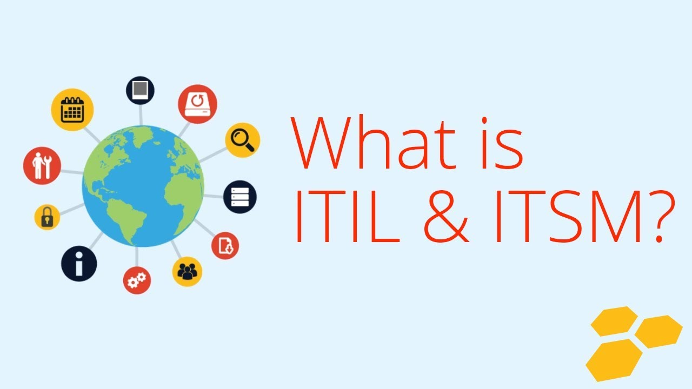

Is ITIL certification worth your time and effort?
Published on: Sep 29, 2019

A pertinent question indeed!
We all know how much time and efforts are required to become an ITILv3 expert (and yes – not to forget the cost involved for training and certification as well!). There are minimum 6 exams (if you opt for Capability Stream) or else 7 (for Lifecycle stream) and around 150-200K INR which is quite higher relatively (as per Indian standards compared to other similar certificates like Prince 2, PMP etc.).
Hold on, but that does not mean that these are not worth striving for. In fact, it all depends on individual’s interest in the area and the opportunity for you to actually implement it in your organization and demonstrate the benefits. So , if you really think it’s going to benefit the organization in the long run (by the way, that also depends on “How it is implemented” ) , then you can invest in it gradually and learn one module at a time and try to implement it as well and see the results.
However, there are not so many jobs in the market for ITIL experts, so if you think that you will make it quite big if you achieve all these certifications, then you are thinking in the wrong direction. So, my single piece of advice would be that you do it only if you are really sure about your interest and you really want to learn, understand and implement it. And, if you have made up your mind to go for it, then just take small steps at a time so that you can get the results in parallel and try to arrange sponsorship from your organization if money matters But you should at least do foundation to understand the overall picture !
What’s the difference between ITSM and ITIL???
Published on: Sep 08, 2019
There is a clear difference between these 2 terminologies. ITSM refers to “IT Service Management” which means managing your IT services (Design, Plan, Deliver, Operate and Control) to provide cost effective solutions to your customers/end users whereas “ITIL” refers to “Information Technology Infrastructure Library” which is just a set of best practices used as a guideline and framework to practice IT Service Management. In Simple words, ITIL is used for ITSM and not vice-versa.
Some more if you are interested further:
- ITIL is published as a series of 5 core books (which cover 5 service lifecycles) and it is owned and managed by AXELOS (JV – Capita & UK Cabinet Office) whereas ITSM is a discipline not owned and managed by anyone.
- You can be ITIL certified ; not ITSM certified – There are no exams and certification schemes for ITSM
- Even if you don’t follow ITIL and you are still managing IT services, that still means that you are doing ITSM.
Top 10 tips to crack ITIL interview
Published on: Oct 09, 2019
You must have read this at multiple sites so far if you are really interested in finding out the tips to crack ITIL interview and I would also like to add my 2 cents here. Follow if you really like them :)
- You should first try to understand the question well because sometimes they are really tricky and understand what exactly the interviewer is looking for – don’t try to catch just keywords!
- Apart from theoretical conceptual knowledge, you really need to have some practical experience in ITIL implementation. If not, then consult someone who has that experience :)
- Generally you would be asked the challenges faced whenever you had tried to implement any process and how did you overcome them – so be prepared with at least 2-3 case studies , e.g., people generally don’t accept changes so easily and also they don’t want to follow lengthy and tedious processes, so how can we make it easy for them so that we can achieve our objectives without putting so much of process overhead (Tools, technology, integration)
- You should have clear understanding of how these processes are inter-related
- Stick to official definitions wherever possible but don’t forget to add your flavor by citing some real-life examples
- Keep a handy flow chart of all ITIL processes , functions and lifecycle to quickly review it before the interview (Google it :))
- You should have clear understanding of the objectives of all the processes (don’t mug up – just try to understand them :))
- Be prepared with some common misconceptions for ITIL, e.g., people think that it is only dealing with requests, incidents, problems, changes etc. but in reality it is much more than that!
- Understand how it helps customers achieve their business goals as the whole foundation of this framework is laid on the concept of service which is always perceived from the point of view of customer.
- Last, but not the least, check some sample questions available on various websites and try to answer those questions yourself without looking at pre-published answers – Helps in building confidence or even reality check sometimes :)
How to implement ITIL???
Published on: Nov 04, 2019
That’s really a difficult topic to cover in one single blog as lot of books and articles have been written about it and it is obvious that everybody would have their own perceptions but I would like to highlight few points which should be common across any such implementation irrespective of the size and the domain of the organization.
First of all, we need to clearly understand that it is a huge change involving cultural, process related, people and technology related etc. So, it has to follow the basics of Organization Change Management like:
- You have to have buy-in from top management and sponsors
- Identify the right stakeholders (anyone who is impacted or who can impact) and build an appropriate project working group
- Clear communication plan for all stakeholders throughout the journey and arrange recurring meetings for feedback and progress
- Resistance Management - Need to know how to manage those people who are not willing to adopt it as they might have their own valid reasons, so you need to address their concerns genuinely
- Earn some supporters initially who might help you in the long run
- Show some quick wins to management and stakeholders
- Take feedback from people rather than imposing your own ideas
- Start from wherever you are – no point dismissing all existing processes just because you want to implement ITIL
- Go step by step so that people can absorb it more effectively
- First agree on the process and then determine the right tool considering all parameters like cost, ease of implementation, maintenance and administration, integration with 3rd party/in-house products, reporting and dashboards etc
- Define the right KPIs for each process and measure them iteratively to understand the process
- Provide adequate training to the relevant teams
- You need to reinforce the change to avoid people reverting to their old ways and habits – putting right level of control and governance
- Last, but not the least – Maintain balance between process overhead and controls – It should not be highly bureaucratic – Utilize technology and automation wherever possible
This article can really go quite long if I start talking about all the steps involved to implement ITIL but as I said before, if we try to stick to the basics and consider above points, then you can be really effective. I would strongly recommend going through 9 guiding principles from ITIL practitioner book (really practical and useful)